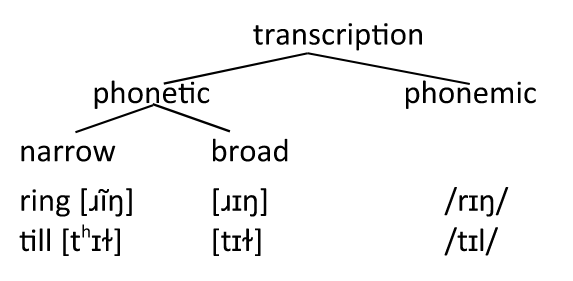
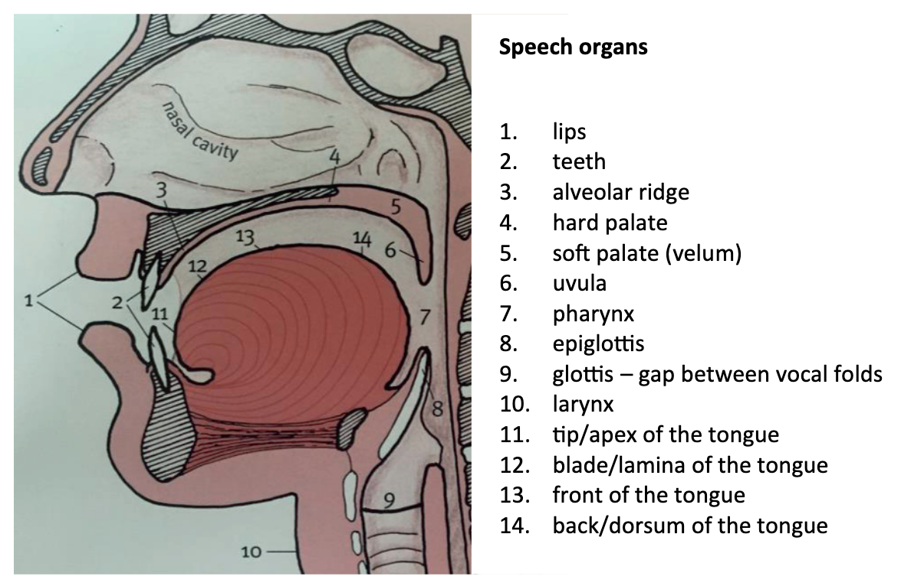
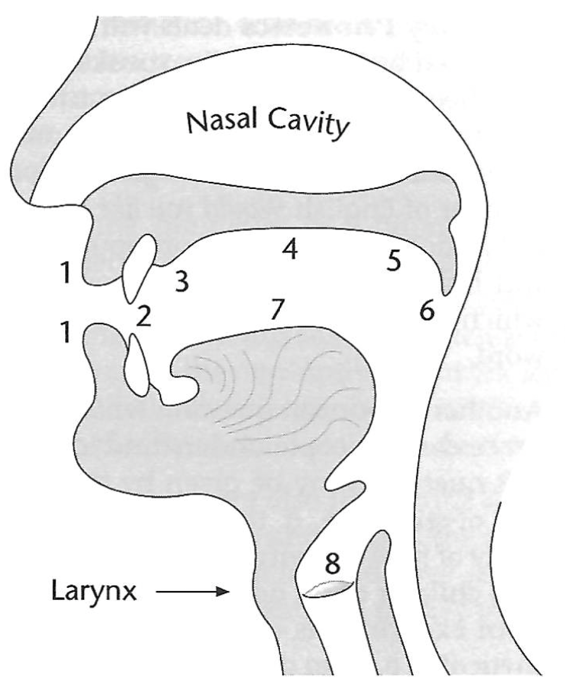
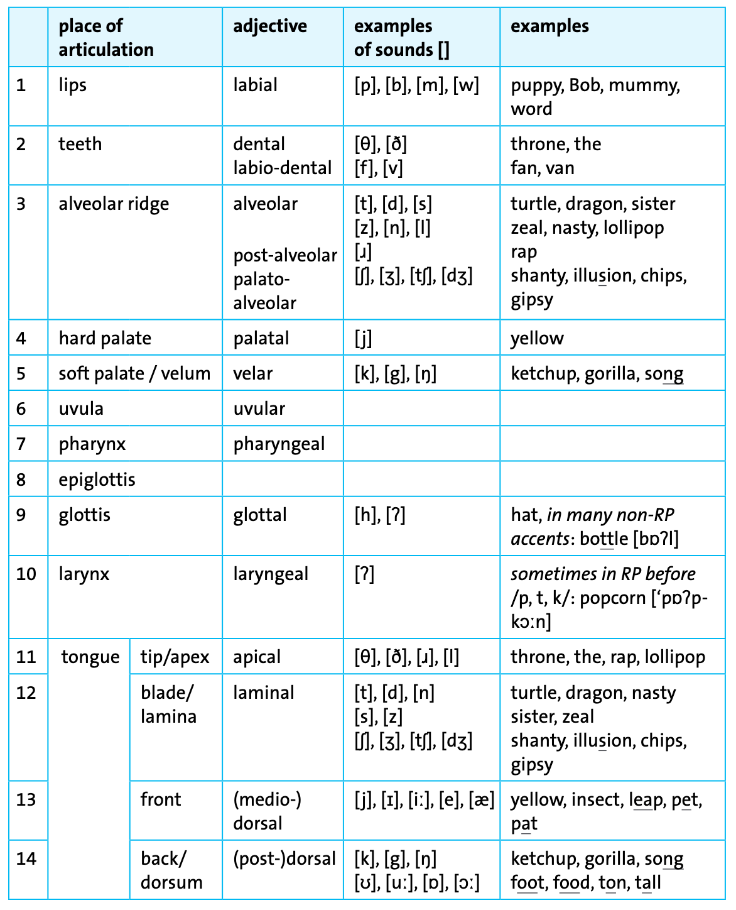
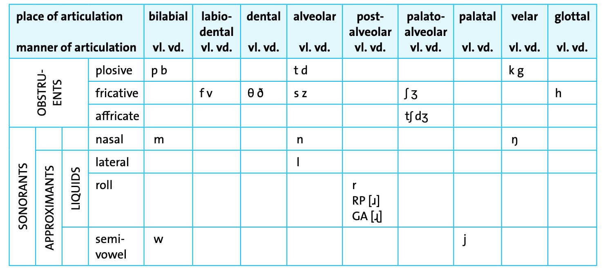
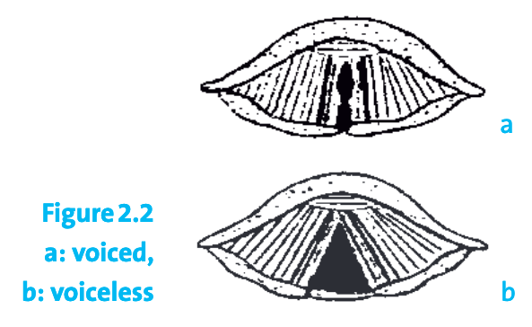
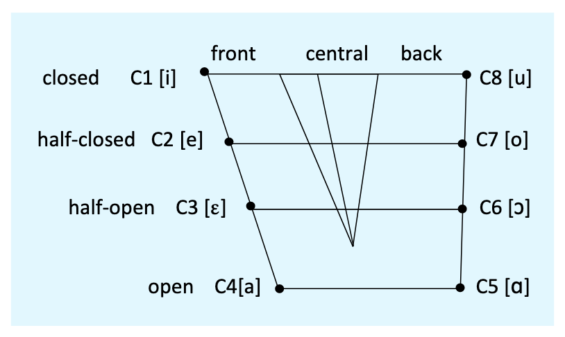
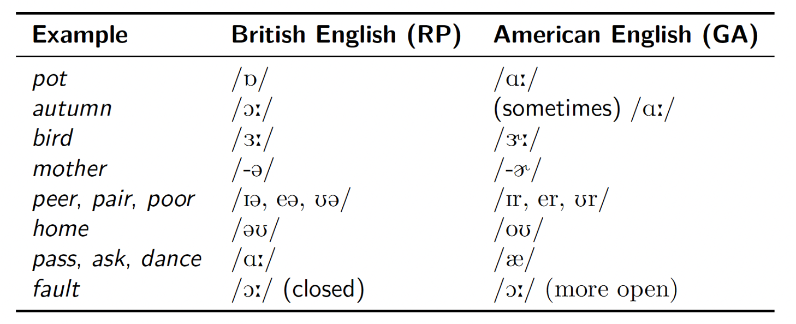
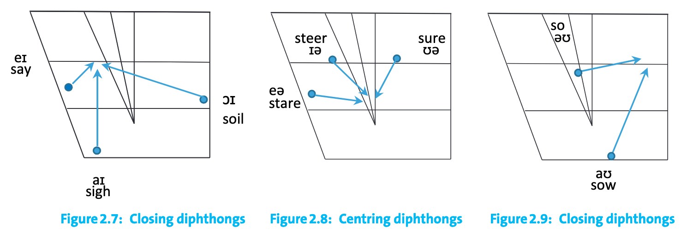
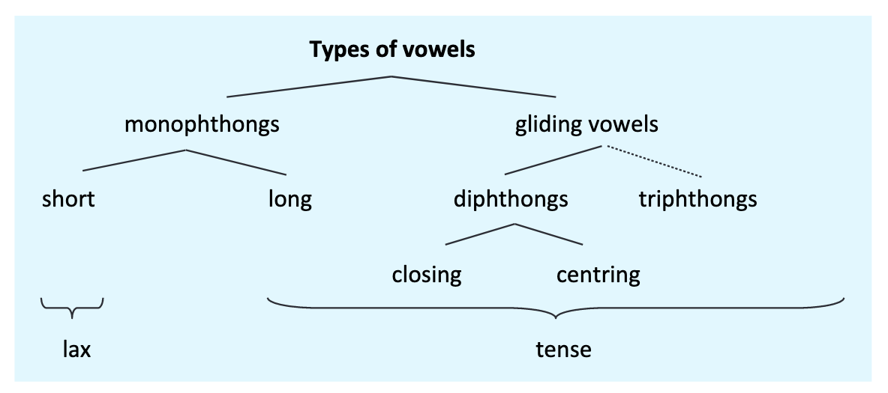

Phonetics
Introduction to linguistics — Course Website
November 3, 2025
Outline
- Phonetics vs phonology: What’s the difference between sounds we make and sound systems?
- Speech organs: Which body parts do we use to produce speech?
- Consonants: How do we classify consonant sounds?
- Vowels: How do we describe and map vowel sounds?
- Transcription: How can we write down pronunciation?
Phonetics vs phonology

Kortmann (2020): 28
Exercise
Assign the following items to the correct linguistic concepts:
- langue
- slashes for transcription /…/
- not language-specific
- concrete realisation
- abstract entity
- parole
- square brackets for transcription […]
- language-specific
Concepts
1. phoneme
2. phone
Phoneme:
- langue
- language-specific
- slashes for transcription /…/
- abstract entity
Phone:
- concrete realisation
- not language-specific
- square brackets for transcription […]
- parole
Broad vs narrow transcription

Kortmann (2020): 30
Speech organs

Kortmann (2020): 31
Exercise: name vocal organs and describe speech sounds
- Fill in the blanks in this figure with the correct names of the vocal organs.
- Give the respective adjectives used to describe speech sounds produced at this place.

| No. | Organ | Adjective |
|---|---|---|
| 1 | lips | labial |
| 2 | teeth | dental |
| 3 | alveolar ridge | alveolar |
| 4 | hard palate | palatal |
| 5 | soft palate (velum) | velar |
| 6 | uvula | uvular |
| 7 | tongue | dorsal |
| 8 | glottis | glottal |
Place of articulation

Kortmann (2020): 31
Consonants
Consonant inventory

Kortmann (2020): 33
Voiced vs unvoiced

Kortmann (2020): 32
Exercise: identify consonant types
Identify the IPA symbols below which represent
- plosives
- fricatives
- voiced consonants.
1. [b]
2. [s]
3. [ʊ]
4. [w]
5. [ʃ]
6. [x]
7. [k]
8. [l]
9. [ɪ]
10. [θ]
11. [ŋ]
12. [d]
a. Plosives
1. [b]
7. [k]
12. [d]
b. Fricatives
2. [s]
5. [ʃ]
6. [x]
10. [θ]
c. Voiced consonants
1. [b]
4. [w]
8. [l]
11. [ŋ]
12. [d]
Other
3. [ʊ] (vowel)
9. [ɪ] (vowel)
Exercise: consonant inventory (Interactive)
Exercise: consonant inventory (Reference)
Which of these …
- starts with an approximant: you or do?
- ends with a fricative consonant: race or real?
- medial consonant is voiced: massive or leisure?
- starts with a dental consonant: shy or thigh?
- starts with a bilabial consonant: set or bet?
- ends with a stop consonant: lip or pill?
- ends with a nasal consonant: dumb or dull?
- starts with an alveolar consonant: quip or dip?
- medial consonant is voiced: robber or hopper?
- starts with a velar consonant: lot or cot?
- starts with a labiodental consonant: mat or vat?
| Word | IPA | Type |
|---|---|---|
| you | /j/ | approximant |
| race | /s/ | fricative |
| leisure | /ʒ/ | voiced |
| thigh | /θ/ | dental |
| bet | /b/ | bilabial |
| lip | /p/ | stop |
| dumb | /m/ | nasal |
| dip | /d/ | alveolar |
| robber | /b/ | voiced |
| cot | /k/ | velar |
| vat | /v/ | labiodental |
Exercise: determine consonant features
Determine the medial consonant phone(s) in each of the following words in terms of
- place of articulation
- manner of articulation
- voicing
1. etching
2. father
3. dagger
4. lodger
5. sunny
6. hopper
7. pleasure
8. selling
9. singer
| Word | Symbol(s) | Place | Manner | Voicing |
|---|---|---|---|---|
| etching | tʃ | palato-alveolar | affricate | voiceless |
| father | ð | dental | fricative | voiced |
| dagger | g | velar | plosive | voiced |
| lodger | dʒ | palato-alveolar | affricate | voiced |
| sunny | n | alveolar | nasal | voiced |
| hopper | p | bilabial | plosive | voiceless |
| pleasure | ʒ | palato-alveolar | fricative | voiced |
| selling | l | alveolar | lateral | voiced |
| singer | ŋ | velar | nasal | voiced |
Vowels
Vowel chart: features

Kortmann (2020): 35
Vowel chart: English vowels & examples
Vowel differences between British and American English

Diphthongs

Kortmann (2020): 36
Types of vowels

Kortmann (2020): 37
Exercise: identify vowel sounds
In the following sets of words, the sound of the vowel is the same in every case but one. Which of these words has a different vowel sound?
- sane, paid, eight, lace, mast: mast: /æ/ instead of /eɪ/
- hoot, good, moon, grew, suit: good: /ʊ/ instead of /uː/
- meat, steak, weak, theme, green: steak: /eɪ/ instead of /iː/
- dud, died, mine, eye, guy: dud: /ʌ/ instead of /aɪ/
- pen, said, death, mess, mean: mean: /iː/ instead of /ɛ/
- ton, toast, both, note, toes: ton: /ɒ/ instead of /əʊ/
Exercise: determine number of phonemes
How many phonemes are there in each of the following words?
| Word | RP | GA | Phonemes |
|---|---|---|---|
| physics | /ˈfɪzɪks/ | ← | 6 |
| axis | /ˈæksɪs/ | ← | 5 |
| laugh | /lɑːf/ | /læf/ | 3 |
| fishes | /ˈfiʃɪz/ | ← | 5 |
| begged | /begd/ | ← | 4 |
| caught | /kɔːt/ | /kɑːt/, /kɔːt/ | 3 |
| batting | /ˈbætɪŋ/ | ← | 5 |
| knock | /nɒk/ | /nɑːk/ | 3 |
| quick | /kwɪk/ | ← | 4 |
Transcription
Transcription dictionaries
Jones, Daniel. 2011. Cambridge English pronouncing dictionary. Ed. By Peter Roach. 18th ed. Cambridge: Cambridge University Press.
https://dictionary.cambridge.org/
Alternative: Wells, John C. 2010. Longman pronunciation dictionary. 3rd ed. Harlow: Pearson Longman.
Exercise: evaluate transcriptions
Interactive version
Reference version
Which of the two transcriptions (RP) is correct?
- sixteen:
- /sɪxˈtiːn/
- /sɪkˈstiːn/ ✅
- football:
- /ˈfʊtbɔːl/ ✅
- /ˈfʊtbol/
- /ˈfʊtbɔːl/ ✅
- strength:
- /strenkθ/
- /streŋθ/ ✅
- umbrella:
- /umˈbrelə/
- /ʌmˈbrelə/ ✅
- hijacking:
- /ˈhaɪʤækɪŋ/ ✅
- /ˈhaɪjækɪŋ/
- /ˈhaɪʤækɪŋ/ ✅
- handmade:
- /ˌhandˈmeɪd/
- /ˌhændˈmeɪd/ ✅
- chipping:
- /ˈʧɪppɪŋ/
- /ˈʧɪpɪŋ/ ✅
- remain:
- /rɪˈman/
- /rɪˈmeɪn/ ✅
Exercise: transcribe words
Transcribe the following words into phonemic IPA and indicate which variety your transcription is based on (Received Pronunciation (RP) or General American (GA)). Use stress marks.
| Word | RP (UK) | GA (US) |
|---|---|---|
| 1. tea | /tiː/ | ← |
| 2. cat | /kæt/ | ← |
| 3. bar | /bɑː/ | /bɑːr/ |
| 4. food | /fuːd/ | ← |
| 5. foot | /fʊt/ | ← |
| 6. pork | /pɔːk/ | /pɔːrk/ |
| 7. maker | /ˈmeɪ.kə/ | /ˈmeɪ.kɚ/ |
| 8. phonology | /fəˈnɒl.ə.dʒi/ | /fəˈnɑː.lə.dʒi/ |
Next week: Phonology
Read Kortmann (2020): ch. 2.2